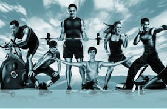

About
About Instant Bulk
Andrew
I'm a food writer who, with zero past enthusiasm for anything athletic, was baited into powerlifting and discovered an affection for getting solid.
On this site I chronicled my year-in addition to long experience of changing from a lounge chair adoring essayist with a propensity for macarons to a competitor, a record-holding powerlifter, with a honest take a gander at the snippets of wonderfulness, depression — and a ton of work — along the way. My powerlifting profession finished with a harm and surgery in winter 2012 yet the force I found didn't vanish when I hung up my weight belt. I'm on a journey for my next enterprise now. To locate another energy I'm adapting new games the world over — attempting rock moving in Vietnam, white water kayaking in Oregon, and Muay Thai in Bangkok among others.
Questions about my experience? (On the other hand how to make the ideal macaron?) Email me. You can likewise discover me on my training.